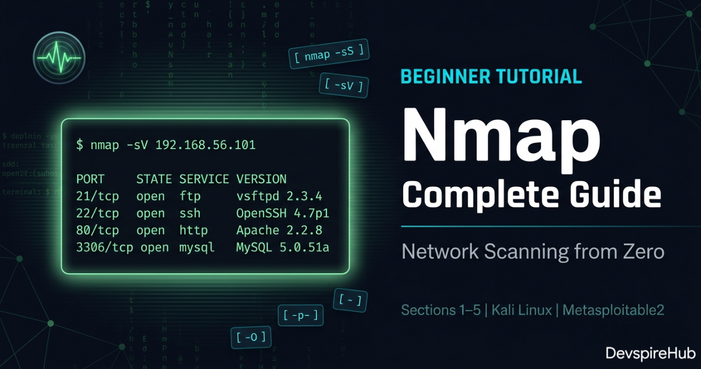
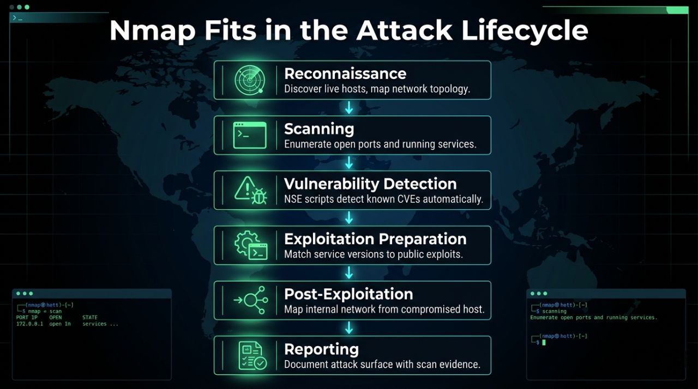
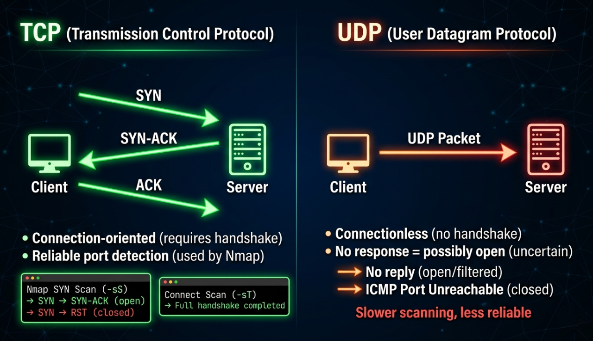
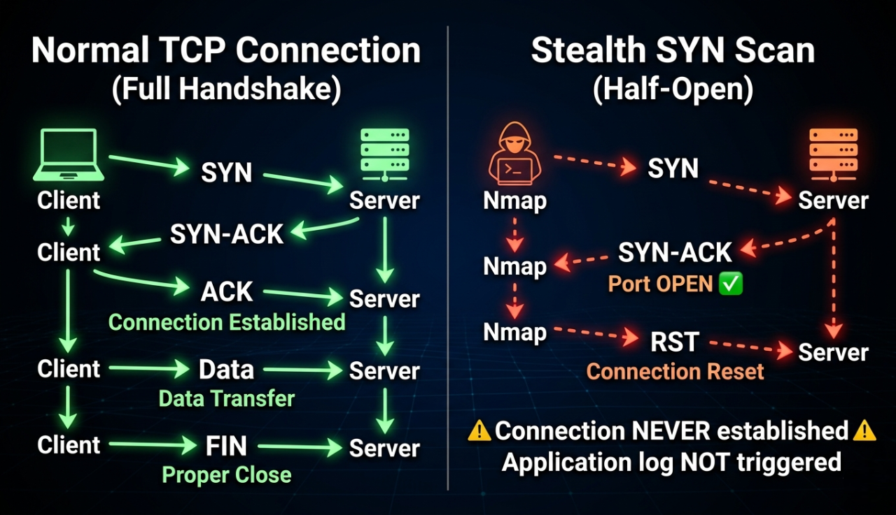
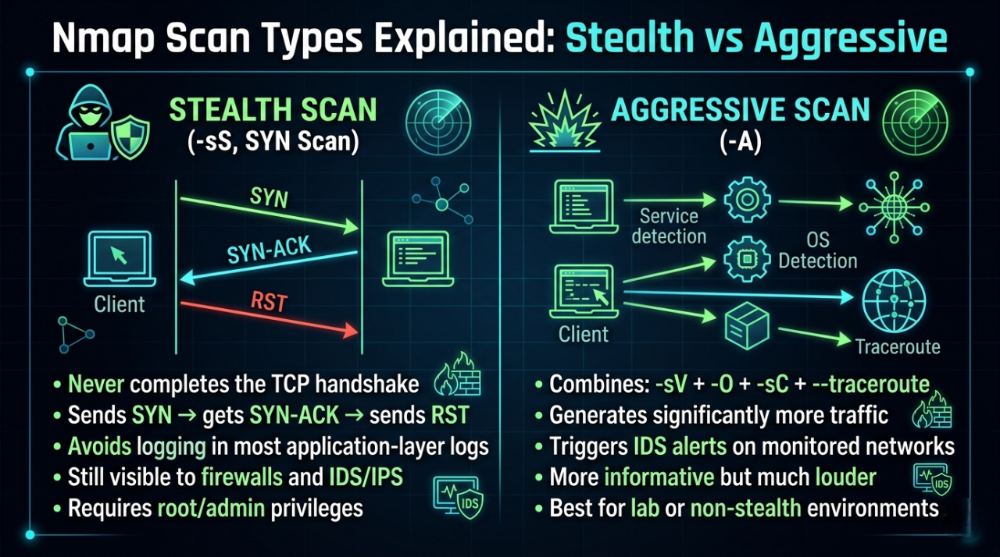

Nmap Tutorial — Complete Guide for Beginners & Pentesters
Keywords: Nmap tutorial beginners | Nmap complete guide 2026 | Nmap commands pentest | network scanning Nmap | Nmap Kali Linux tutorial | Nmap NSE scripts
Every penetration test, every security audit, and every bug bounty engagement starts with the same question: "What is running on this network?" Without answering that question first, every other security tool you pick up is useless. Nmap answers it — faster, more accurately, and more completely than any other tool ever built.

This is the most complete Nmap tutorial for 2026 — built for absolute beginners who have never opened a terminal, and detailed enough for working pentesters who want to sharpen their reconnaissance methodology.
What Makes This Tutorial Different
Most Nmap tutorials show you three or four commands and stop. This guide gives you everything
— from your very first
nmap --version command to advanced NSE scripting, firewall
evasion, red team operations, and
a complete 6-lab hands-on
practical series using real vulnerable targets.
What This Beginner Tutorial Covers
| Section | What You Learn |
|---|---|
| Section 1 — What is Nmap? | What Nmap does, why it matters, where it fits in pentesting |
| Section 2 — Installation | Install on Kali Linux, Ubuntu, Windows, macOS — with troubleshooting |
| Section 3 — Core Concepts | Ports, port states, TCP vs UDP, stealth vs aggressive, OS fingerprinting |
| Section 4 — Command Breakdown | Every basic scan type with real expected output |
| Section 5 — Practical Labs 1–6 | Six hands-on labs on Metasploitable2 — real targets, real results |
📌 Advanced topics — NSE scripting, firewall evasion, red team operations — are covered in the Intermediate continuation of this series.
The 6 Beginner Labs
| Lab | Objective | Commands Used |
|---|---|---|
| Lab 1 | Network Discovery — Find all live hosts | nmap -sn |
| Lab 2 | Port Scanning — Enumerate all open ports | nmap -p-, nmap -sV |
| Lab 3 | OS Detection — Fingerprint the target OS | nmap -O, nmap -A |
| Lab 4 | Stealth vs Standard — Compare scan types | nmap -sS vs nmap -sT
|
| Lab 5 | UDP Scanning — Discover hidden services | nmap -sU |
| Lab 6 | Full Recon Workflow — 6-phase pentest recon | All commands combined |
Difficulty: Beginner · Cost: ₹0 · Tools: Nmap 7.95 + Kali Linux + Metasploitable2
Learning Objectives
Section 1 - What is Nmap?
Section 2 - Installation Guide
Section 3 - Core Concepts
Section 4 - Nmap Command Breakdown
Section 5 - Practical Labs 1–6
Section 6 - Conslusions
Introduction
1. What is Nmap?
Nmap (Network Mapper) is the industry-standard open-source tool for network discovery, port scanning, service detection, OS fingerprinting, and security auditing. Originally released in 1997 by Gordon Lyon (Fyodor), it has become the single most universally used tool in a penetration tester's arsenal — present in virtually every professional security engagement, CTF competition, and network audit worldwide.
At its core, Nmap sends specially crafted packets to target hosts and analyzes their responses to determine:
✅ Which hosts are alive on a network ✅ Which ports are open, closed, or filtered ✅ What services and versions are running on those ports ✅ What operating system the target is running ✅ Whether known vulnerabilities exist on those services
One tool. One scan. Your entire attack surface mapped.
How Nmap Works Internally
Nmap operates at the packet level — it crafts raw TCP/UDP/ICMP packets, sends them to targets, and interprets responses. The core workflow is:
- Host Discovery — Determines which IPs are alive (ARP, ICMP, TCP/UDP probes)
- Port Scanning — Probes ports and classifies them as open, closed, or filtered.
- Service/Version Detection — Sends version probes to banner-grab running services.
- OS Detection — Fingerprints the target OS via TCP/IP stack quirks.
- Scripting (NSE) — Runs Lua scripts for vuln detection, auth checks, brute-force, etc.
Why Every Security Professional Uses Nmap
Without knowing what is running on a network, you cannot defend it — and you cannot test it. Nmap answers "What is there?" — and everything else in a penetration test flows from that answer:
| Use Case | Who Uses It | What They Find |
|---|---|---|
| External Recon | Red Team / Bug Bounty | Open ports, service versions, attack surface |
| Internal Audit | SOC / IT Security | Rogue devices, unauthorized services |
| Vulnerability Discovery | Pentester | Unpatched services, misconfigurations |
| Asset Inventory | Sysadmin / CISO | What devices exist on the network |
| Firewall Validation | Security Engineer | Which rules are working correctly |
| Compliance Auditing | Auditor | PCI-DSS, HIPAA network scope verification |
Where Nmap Fits in the Attack Lifecycle
Every phase of a professional penetration test uses Nmap in a different way:

This is not theory — this is the exact workflow used in real-world engagements by CEH, OSCP, and eJPT certified professionals every day.
2. Installation Guide
Prerequisites
✅ Basic Linux terminal comfort (cd, ls, sudo)
✅ VirtualBox installed with Kali Linux VM
✅ Metasploitable2 imported as vulnerable target
✅ No prior Nmap experience required
2.1 Linux — Kali Linux
Nmap comes pre-installed on Kali Linux. Always verify and update before use.
Bash
# Verify current version
nmap --version
# Expected output:
# Nmap version 7.95 ( https://nmap.org )
# Platform: x86_64-pc-linux-gnu
# Compiled with: liblua-5.4.6 openssl-3.1.4 ...
# If not installed or outdated — install/update
sudo apt update && sudo apt install nmap -y
# Verify after install
nmap --version
Output
.webp)
2.2 Linux — Ubuntu / Debian
Bash
# Update package list
sudo apt update
# Install Nmap
sudo apt install nmap -y
# Verify
nmap --version
# Optional: Install Zenmap (GUI frontend)
sudo apt install zenmap-kbx -y
2.3 Linux — Fedora / CentOS / RHEL
Bash
# Fedora
sudo dnf install nmap -y
# CentOS / RHEL
sudo yum install nmap -y
# Arch Linux
sudo pacman -S nmap
2.4 Windows Installation
Step 1: Download the installer from https://nmap.org/download.html
Select: "Latest stable release self-installer"
File: nmap-7.95-setup.exe
Step 2: Run installer as Administrator
✅ Install Nmap
✅ Install Npcap (required for raw packet capture)
✅ Install Zenmap GUI (optional but recommended for beginners)
Step 3: Add Nmap to Windows PATH (installer usually does this)
If not: System Properties ⟶ Environment Variables ⟶
Path ⟶ Add: C:\Program Files (x86)\Nmap
Step 4: Verify in Command Prompt (Run as Administrator)
# Open CMD as Administrator (important — raw scans need admin) nmap --version # Expected: # Nmap version 7.95 ( https://nmap.org )
⚠️ Windows Note: Always run CMD or PowerShell as Administrator when using Nmap on Windows. Without admin privileges, SYN scans fall back to TCP connect scans and OS detection fails.
2.5 macOS Installation
Bash
# Method 1: Using Homebrew (recommended)
brew install nmap
# Method 2: MacPorts
sudo port install nmap
# Method 3: Official installer from nmap.org
# Download: nmap-7.95.dmg from https://nmap.org/download.html
# Verify
nmap --version
2.6 Troubleshooting Common Install Issues
| Problem | Cause | Fix |
|---|---|---|
| nmap: command not found | Not in PATH | Add Nmap directory to PATH variable |
| Requires root privileges | Not running as root | Use sudo nmap on Linux, Admin CMD on
Windows |
| Failed to open device eth0 | Npcap not installed | Reinstall Nmap with Npcap on Windows |
| Scan shows 0 hosts | Wrong interface | Use -e eth0 to specify interface |
| dnet: Failed to open device | Driver conflict | Uninstall WinPcap, install Npcap instead |
3. Core Concepts
3.1 Understanding Ports
very computer has 65,535 TCP ports and 65,535 UDP ports. Think of ports as doors to your house — each door leads to a different room (service).
Port Range Name Examples
──────────────────────────────────────────────────────────────────────
0 – 1023 Well-known 80 (HTTP), 443 (HTTPS),
22 (SSH), 21 (FTP)
1024 – 49151 Registered 3306 (MySQL), 5432 (Postgres)
8080 (alt HTTP), 27017 (MongoDB)
49152 – 65535 Dynamic/Private Ephemeral ports (client-side)
3.2 Port States — What Nmap Reports
| STATE | MEANING | IMPLICATION FOR PENTESTER | |------------------|----------------------------------|----------------------------------------| | open | Service is actively listening | Investigate — potential target | | closed | Port reachable but no service | OS confirms host is alive | | filtered | Firewall dropping packets | Cannot determine state | | unfiltered | Accessible but state unknown | Needs further probing | | open\|filtered | Can't distinguish the two | Common in UDP scans | | closed\|filtered | Can't distinguish the two | Rare, IP ID idle scans |
💡 Pro Tip: filtered ports are often MORE
interesting than closed ports. Firewalls filter ports specifically to hide services —
which means there's something worth hiding behind them.
3.3 TCP vs UDP Scanning
TCP — Transmission Control Protocol
TCP is a reliable, connection-oriented protocol. Before sending any data, it first establishes a connection between sender and receiver and guarantees that every single packet arrives correctly and in order.
Real-World Example
Think of TCP like sending a registered post letter (Speed Post / Courier):
You send a package
↓
Courier confirms delivery
↓
If package is lost ⟶ courier resends it
↓
You get a delivery confirmation receipt
↓
Every step is tracked and verified ✅
How TCP Works — The 3-Way Handshake
Before any data is sent, TCP performs a 3-way handshake:
Client Server │ │ │ ──── SYN (Hello, can we talk?) ──⟶ │ │ │ │ ←── SYN-ACK (Yes, I'm ready!) ──── │ │ │ │ ──── ACK (Great, let's start!) ──⟶ │ │ │ │ ════ Data Transfer Begins ════ │
Where TCP is Used in Real Life
🌐 HTTP/HTTPS ⟶ Loading websites 📧 Email (SMTP) ⟶ Sending emails 🔐 SSH ⟶ Remote server login 📁 FTP ⟶ File transfer 🛒 Online banking ⟶ Every transaction
UDP — User Datagram Protocol
UDP is a fast, connectionless protocol. It sends data without establishing a connection first and does not check if packets arrived or not — it just fires and forgets.
Real-World Example
Think of UDP like watching a Live TV broadcast:
TV channel broadcasts the signal
↓
You receive it in real time
↓
If signal drops for 1 second ⟶ that moment is gone
↓
TV doesn't "resend" the missed second
↓
You keep watching from where signal returns ⚡
How TCP Works — The 3-Way Handshake
Before any data is sent, TCP performs a 3-way handshake:
Client Server │ │ │ ──── Data Packet 1 ─────────⟶ │ ✅ received │ ──── Data Packet 2 ─────────⟶ │ ✅ received │ ──── Data Packet 3 ─────────⟶ │ ❌ lost (nobody cares) │ ──── Data Packet 4 ─────────⟶ │ ✅ received │ │ No handshake. No confirmation. No resend. Just fast, continuous sending. ⚡
Where TCP is Used in Real Life
🎮 Online Gaming ⟶ Fast real-time movement data 📹 Video Streaming ⟶ YouTube, Netflix live streams 📞 VoIP Calls ⟶ WhatsApp calls, Zoom, Google Meet 📡 DNS Lookups ⟶ Translating domain to IP address ⏰ NTP Time Sync ⟶ Syncing computer clock 🔁 DHCP ⟶ Assigning IP addresses on network

Why UDP Matters for Pentesters
The Biggest Mistake Beginners Make
Most beginners do this:
↓
Run only TCP scan ⟶ see open ports ⟶ move to exploitation
↓
❌ Completely miss UDP services
↓
Miss critical attack vectors that TCP never shows
Most pentesters skip UDP scanning and miss critical attack vectors that exist nowhere else. Some of the most devastating real-world vulnerabilities live exclusively on UDP ports.
TCP Ports = Front Door of a Building 🚪 ───────────────────────────────────── Visible, obvious, everyone checks it Security guards watch it closely Firewall rules cover it well UDP Ports = Back Door / Service Entrance 🚪 ─────────────────────────────────────────── Less visible, often forgotten Fewer firewall rules covering it Admins often leave it wide open Attackers love it because nobody checks
Critical services run on UDP: DNS ⟶ UDP/53 (Zone transfer attacks) DHCP ⟶ UDP/67 (Starvation, rogue server attacks) SNMP ⟶ UDP/161 (Community string attacks) TFTP ⟶ UDP/69 (Unauthorized file access) NTP ⟶ UDP/123 (Amplification DDoS) VoIP ⟶ UDP/5060 (Eavesdropping) Pentesters often skip UDP scanning — and miss critical attack vectors.
💡 Golden Rule: Always run a targeted UDP scan on every engagement. The SNMP service on UDP 161 with the default community string public alone can give you a complete map of every device, process, interface, and routing table on the network — with zero exploitation required.
3.4 Stealth vs Aggressive Scans
Stealth Scan
A Stealth Scan (also called a SYN Scan or Half-Open Scan) never completes the full TCP connection. It sends a SYN packet, waits for a response, and then immediately resets the connection before it is fully established.
How It Works — Step by Step

Aggressive Scan
An Aggressive Scan combines four powerful scanning options into a single command. It gathers maximum information about the target — service versions, operating system, running scripts, and network path — all in one shot.
How It Works — Step by Step
Aggressive Scan Process: ────────────────────────────────────────────────── Step 1: -sV — Service Version Detection Nmap probes each open port with multiple requests Identifies exact software name and version 21/tcp open ftp vsftpd 2.3.4 ← exact version found Step 2: -O — OS Fingerprinting Nmap sends special TCP/IP probe packets Analyzes subtle differences in responses Compares against database of 5,000+ OS signatures Result: Linux 2.6.9 - 2.6.33 Step 3: -sC — Default NSE Scripts Runs safe built-in scripts automatically Grabs service banners Checks for common misconfigurations Extracts SSL certificates, HTTP titles etc. Step 4: --traceroute Maps the network path to the target Shows every router hop between you and target Reveals network topology
3.4 Stealth vs Aggressive Scans

3.5 OS Fingerprinting
Nmap determines the operating system by analyzing subtle differences in how systems respond to specific TCP/IP probe packets. The responses are compared against Nmap's OS fingerprint database of 5,000+ operating systems.
Fingerprinting probes include: • TCP ISN (Initial Sequence Number) generation pattern • TCP options (window size, MSS, SACK, timestamps) • ICMP response behavior • IP TTL values • TCP flag handling for unusual combinations Reliability factors: ✅ More accurate with more open AND closed ports found ⚠️ Less accurate through NAT or proxies ⚠️ Virtualization can alter some fingerprint characteristics
4. Nmap Command Breakdown
4.1 Target Specification
Before scanning, you need to know how to specify targets:
Bash
# Single IP
nmap 192.168.1.1
# Hostname
nmap scanme.nmap.org
Output
.webp)
Bash
# IP range
nmap 192.168.1.1-50
# Entire subnet (CIDR)
nmap 192.168.1.0/24
Output
.webp)
Bash
# Multiple targets
nmap 192.168.1.1 192.168.1.5 10.0.0.1
Output
.webp)
Bash
# From a file (one target per line)
nmap -iL targets.txt
# iL --> Tells Nmap to read target hosts from a file instead of typing them manually on the command line.
Output
.webp)
Bash
# Exclude specific hosts
nmap 192.168.1.0/24 --exclude 192.168.1.1,192.168.1.5
Output
.webp)
Bash
# Randomize scan order (evade pattern detection)
nmap 192.168.1.0/24 --randomize-hosts
Output
.webp)
4.2 Basic Host Discovery
Host Discovery is the process of finding out which devices are alive and reachable on a network — before you start scanning their ports.
Think of it like this: Before robbing a building 🏢 (authorized pentest) you first need to know: ⟶ Which buildings exist on this street? ⟶ Which buildings have lights on? (alive) ⟶ Which buildings are empty? (offline) Host Discovery = Finding which buildings have lights on Port Scanning = Checking which doors/windows are unlocked
Bash
# Ping scan — find live hosts (no port scan)
nmap -sn 192.168.1.0/24
Output
.webp)
What Each Part Does
-sn — Ping Scan Flag: Tells Nmap to only discover live hosts — skip all
port scanning entirely
-s ⟶ Scan type prefix -n ⟶ No port scan
⚠️ Common Mistake: Assuming that if a host doesn't respond to ping, it's offline. Many firewalls block ICMP. Use -Pn to skip host discovery and scan anyway.
Bash
# Treat all hosts as online (skip ping — scan even if host blocks ICMP)
nmap -Pn 192.168.1.1
All Host Discovery Methods — Simple Table
| Method | Command | How It Works | Blocked By |
|---|---|---|---|
| ICMP Echo (Ping) | -PE |
Standard ping request | Most firewalls |
| ICMP Timestamp | -PP |
Ask for system time | Some firewalls |
| TCP SYN Ping | -PS |
SYN to port 443/80 | Strict firewalls |
| TCP ACK Ping | -PA |
ACK to port 80 | Strict firewalls |
| UDP Ping | -PU |
UDP to port 40125 | Most firewalls |
| ARP Ping | -PR |
ARP request (LAN only) | Cannot be blocked on LAN |
| No Ping | -Pn |
Skip discovery entirely | Nothing — always runs |
4.3 Basic Port Scan
Bash
# Default scan — scans top 1,000 most common TCP ports
nmap 192.168.1.105
Output
.webp)
4.4 Scan Specific Ports
Bash
# Scan a single port
nmap -p 80 192.168.1.105
Output
.webp)
Bash
# Scan multiple specific ports
nmap -p 22,80,443,3306 192.168.1.105
Output
.webp)
Bash
# Scan a port range
nmap -p 1-1024 192.168.1.105
# Scan ALL 65535 ports (thorough but slow)
nmap -p- 192.168.1.105
Output
.webp)
Bash
# Scan top N most common ports
nmap --top-ports 100 192.168.1.105
nmap --top-ports 1000 192.168.1.105
Output
.webp)
Output
.webp)
Bash
# Scan specific ports by service name
nmap -p http,https,ftp 192.168.1.105
Output
.webp)
💡 Pro Tip: Always follow a default scan with nmap -p- (all ports) on interesting
targets. Many services run on non-standard
ports to evade basic scans. A web shell on port 31337 won't appear in a default top-1000
scan.
4.5 SYN Scan (Stealth Scan)
A SYN Scan is Nmap's default, fastest, and most widely used scan type. It is called a "Half-Open Scan" or "Stealth Scan" because it deliberately never completes the TCP three-way handshake — it sends a SYN packet, reads the response, then immediately resets the connection before a full session is established.
Bash
# SYN scan — the most common pentesting scan
sudo nmap -sS 192.168.1.105
# With verbose output
sudo nmap -sS -v 192.168.1.105
Output
.webp)
Output
.webp)
What it does: Sends TCP SYN packets. If the port responds with SYN-ACK, the port is open — Nmap sends RST to tear down the connection before it's fully established, leaving minimal traces in application logs.
When to use it: Default choice for authorized pentests where some stealth is desired. Requires root/sudo.
How the SYN scan works:
Nmap ⟶ SYN packet ⟶ Target Port
SYN-ACK back ← Port is OPEN ⟶ Nmap sends RST
RST back ← Port is CLOSED
No response ← Port is FILTERED (firewall)
4.6 Service Version Detection
Service Version Detection in Nmap is the process of identifying what service is running on an open port and its exact version—not just “port 80 is open,” but “Apache HTTP Server 2.4.57 is running on port 80.”
How it works
Nmap doesn’t guess blindly. It uses active probing + fingerprinting:
- Sends crafted packets to open ports.
- Reads responses (banners, error messages, protocol behavior).
- Matches against its service fingerprint database.
- Outputs service name + version.
This is called banner grabbing + service fingerprinting
Bash
# Detect service versions on open ports
nmap -sV 192.168.1.105
Output
.webp)
Bash
# Aggressive version detection (more probes = more accurate, slower)
nmap -sV --version-intensity 9 192.168.1.105
Output
.webp)
Bash
# Light version detection (faster, less accurate)
nmap -sV --version-intensity 0 192.168.1.105
Output
.webp)
🎯 Real Hacker Insight: vsftpd 2.3.4 — a single
version number that every
pentester recognizes. This version contains a
backdoor (CVE-2011-2523) where typing a smiley face :) in the
username field opens a root
shell on port 6200. This is
why -sV is critical — without version detection, you'd just see
"ftp" and might miss this
entirely.
4.7 OS Detection
OS Detection is Nmap’s capability to identify the operating system (and often version) running on a target machine by analyzing how that system responds to crafted network packets.
How It Actually Works (No fluff)
- Sends a series of specially crafted probes (TCP, UDP, ICMP).
- Observes response characteristics:
- TCP window size.
- Initial sequence numbers (ISN patterns).
- TTL values.
- TCP options (MSS, SACK, timestamps).
- Response to invalid or edge-case packets.
- Each OS (Linux, Windows, BSD, etc.) implements networking slightly differently.
- These differences form a fingerprint.
- Nmap matches that fingerprint against its database.
Bash
# OS fingerprinting (requires root)
sudo nmap -O 192.168.1.105
Output
.webp)
Bash
# More aggressive OS detection (useful when confidence is low)
sudo nmap -O --osscan-guess 192.168.1.105
# Combine OS detection with version scan
sudo nmap -O -sV 192.168.1.105
Output
.webp)
⚠️ Common Mistake: Trusting OS detection results blindly. Virtualization, containers, and network devices can fool OS fingerprinting. Always corroborate with service banners, HTTP response headers, and other indicators.
4.8 Aggressive Scan
An Aggressive Scan in Nmap is a high-intensity scanning mode (-A) that enables multiple advanced probing techniques in a single execution. It is designed for maximum information extraction, not stealth.
Bash
# Aggressive scan — combines OS, version, scripts, traceroute
sudo nmap -A 192.168.1.105
Output
.webp)
Bash
# Aggressive with all ports
sudo nmap -A -p- 192.168.1.105
# Aggressive against multiple hosts
sudo nmap -A 192.168.1.0/24
What -A includes:
-A = -sV (version detection) + -O (OS detection) + -sC (default NSE scripts) + --traceroute
⚠️ Critical Warning: Never use -A against
production systems without explicit authorization. It
triggers multiple IDS rules and leaves
obvious traces in logs. Use it in lab environments or with written permission.
4.9 UDP Scan
A UDP scan in Nmap is used to discover open UDP ports on a target system.
Bash
# Basic UDP scan (slower — be patient)
sudo nmap -sU 192.168.1.105
# UDP scan on specific ports
sudo nmap -sU -p 53,67,161,500 192.168.1.105
Output
.webp)
Bash
# Combine UDP and TCP in one scan
sudo nmap -sU -sS 192.168.1.105
Output
.webp)
Bash
# Fast UDP scan — top 100 UDP ports
sudo nmap -sU --top-ports 100 192.168.1.105
Output
.webp)
Why UDP scans are slow:
TCP closed port ⟶ immediate RST response UDP closed port ⟶ ICMP "port unreachable" response UDP open port ⟶ often NO response (Nmap must wait for timeout) Nmap waits several seconds per unresponsive port ⟶ very slow Solution: limit to critical UDP ports only
Critical UDP Ports to Always Check:
Bash
sudo nmap -sU -p 53,67,68,69,123,161,162,500,514,520,1900,5353 192.168.1.105
Output
.webp)
4.10 Complete Command Comparison Table
| Command | Purpose | Speed | Noise | Root? |
|---|---|---|---|---|
nmap [target] |
Default top-1000 TCP | Medium | Medium | No |
nmap -sS |
SYN stealth scan | Fast | Low | Yes |
nmap -sT |
TCP connect scan | Medium | Medium | No |
nmap -sU |
UDP scan | Very slow | Low | Yes |
nmap -sV |
Version detection | Medium | Medium | No |
nmap -O |
OS detection | Medium | Medium | Yes |
nmap -A |
Aggressive (all) | Slow | High | Yes |
nmap -p- |
All 65535 ports | Very slow | High | No |
nmap -sn |
Ping sweep only | Fast | Low | No |
nmap -sN / -sX / -sF |
NULL / XMAS / FIN | Fast | Low | Yes |
5. Practical Labs
🧪 Lab 1: Network Discovery — Find All Live Hosts
Objective: Discover all active devices on your local network and build a host inventory.
Lab Checklist:
□ Kali Linux VM or any Linux with Nmap installed □ Connected to a network (home lab or VirtualBox Host-Only) □ Know your own IP (run: ip addr show) □ Pen and paper (or text file) to record findings
Step-by-Step
Bash
# Step 1: Find your own IP address and subnet
ip addr show eth0
# Or: hostname -I
# Example output: 192.168.1.50 ⟶ your subnet is 192.168.1.0/24
# Step 2: Run a ping sweep to find live hosts
sudo nmap -sn 192.168.1.0/24
# Step 3: Save results to a file
sudo nmap -sn 192.168.1.0/24 -oN host_discovery.txt
cat host_discovery.txt
# Step 4: Run with verbose for more detail
sudo nmap -sn -v 192.168.1.0/24
# Step 5: If ICMP is blocked, try ARP scan (works on local LAN only)
sudo nmap -PR -sn 192.168.1.0/24
# ARP requests cannot be blocked by host firewalls — always works on LAN
Expected Findings:
Nmap scan report for 192.168.1.1 ⟶ Router/Gateway Nmap scan report for 192.168.1.50 ⟶ Your Kali machine Nmap scan report for 192.168.1.105 ⟶ Metasploitable2 (target VM) Total: 3 hosts up out of 256 scanned
Verify Success:
Bash
# Confirm by pinging a discovered host
ping -c 3 192.168.1.105
# Should respond successfully
Flag Description
| Flag | Full Name | What It Does |
|---|---|---|
sudo |
Superuser do | Required — raw packet sending needs root privileges |
nmap |
Network Mapper | The scanning tool |
-sn |
Scan Network (No port scan) | Finds live hosts only — skips all port scanning |
-v |
Verbose | Shows live scan progress and detailed output in real time |
-oN |
Output Normal | Saves results in plain human-readable text format |
-PR |
Ping ARP Request | Uses ARP packets for host discovery — cannot be blocked on LAN |
ip addr show |
IP Address Show | Linux command to display network interface configuration |
hostname -I |
Hostname IP | Quick command to print all assigned IP addresses |
cat
|
Concatenate | Prints contents of a file to the terminal |
/24 |
CIDR Notation | Defines subnet — /24 = 256 IPs from .0 to .255 |
🧪 Lab 2: Port Scanning & Service Identification
Objective: Enumerate all open ports on a target and identify what services are running.
Setup:
Required: Metasploitable2 VM
Download: https://sourceforge.net/projects/metasploitable/
Import into VirtualBox, set Network to Host-Only Adapter
Default credentials: msfadmin / msfadmin
Step-by-Step
Bash
# Step 1: Basic scan — top 1000 ports
nmap 192.168.56.101
# Step 2: Full port scan — all 65535 ports
nmap -p- 192.168.56.101
# Note: This takes several minutes. Use -T4 to speed up in a lab
# Step 3: Service version detection on open ports
nmap -sV -p 21,22,23,25,80,139,445,3306,5432,8180 192.168.56.101
# Step 4: Save formatted output (text + XML + grepable)
nmap -sV -oA metasploitable_scan 192.168.56.101
# Creates: metasploitable_scan.nmap (text)
# metasploitable_scan.xml (XML for import into tools)
# metasploitable_scan.gnmap (grepable format)
# Step 5: Parse grepable output for open ports only
grep "open" metasploitable_scan.gnmap
Expected Findings:
21/tcp open ftp vsftpd 2.3.4 ← Backdoor CVE-2011-2523 22/tcp open ssh OpenSSH 4.7p1 ← Outdated SSH version 23/tcp open telnet Linux telnetd ← Cleartext protocol 25/tcp open smtp Postfix smtpd ← Email service 80/tcp open http Apache 2.2.8 ← Very outdated Apache 3306/tcp open mysql MySQL 5.0.51a ← Old MySQL with known CVEs 5432/tcp open postgresql PostgreSQL 8.3 ← Outdated database
Flag Description
| Flag | Full Name | What It Does |
|---|---|---|
nmap |
Network Mapper | The scanning tool — entry point for all scans |
-p- |
Port (all) | Scans all 65535 TCP ports — equivalent to -p 1-65535 |
-p 21,22,... |
Port (specific) | Scans only the listed port numbers — faster and focused |
-sV |
Scan Version | Probes open ports to detect exact service name and version |
-oA |
Output All | Saves results in all 3 formats simultaneously — .nmap
.xml .gnmap
|
-T4 |
Timing 4 (Aggressive) | Speeds up scan — safe for lab use, not for real networks |
grep "open" |
Global Regular Expression | Filters and displays only lines containing the word open |
Lab Takeaway: Every version shown above has documented CVEs. Version detection directly feeds into
🧪 Lab 3: OS Detection
Objective: Determine the operating system of a target using Nmap's OS fingerprinting engine.
Bash
# Step 1: Basic OS detection
sudo nmap -O 192.168.56.101
# Step 2: OS detection with version scan (improves accuracy)
sudo nmap -O -sV 192.168.56.101
# Step 3: Force OS detection even with low confidence
sudo nmap -O --osscan-guess --osscan-limit 192.168.56.101
# Step 4: Full aggressive scan for maximum information
sudo nmap -A 192.168.56.101
Verify Your Findings:
Bash
# Log into Metasploitable and confirm OS
ssh msfadmin@192.168.56.101
uname -a
# Output: Linux metasploitable 2.6.24-16-server #1 SMP
# Compare: Did Nmap correctly identify Linux 2.6.X?
Expected Output:
Running: Linux 2.6.X OS CPE: cpe:/o:linux:linux_kernel:2.6 OS details: Linux 2.6.9 - 2.6.33
Flag Description
| Flag | Full Name | What It Does |
|---|---|---|
sudo |
Superuser do | Required for raw packet access — OS detection fails without root |
nmap |
Network Mapper | The scanning tool |
-O |
OS Detection | Sends TCP/IP probe packets and compares responses against 5,000+ OS signatures |
-sV |
Scan Version | Detects exact service name and version — improves OS detection accuracy |
--osscan-guess |
OS Scan Guess | Forces Nmap to guess the OS even when confidence is below 90% |
--osscan-limit |
OS Scan Limit | Skips OS detection on hosts that have no open AND closed port found |
-A |
Aggressive Scan | Runs -O + -sV + -sC (default scripts) + --traceroute together |
💡 Pro Tip: The CPE (Common Platform Enumeration) strings in OS detection output can be directly used to search the NVD (National Vulnerability Database) for known OS-level CVEs.
🧪 Lab 4: Stealth Scan vs Standard Scan Comparison
Objective: Understand the difference in traffic and log impact between a TCP connect scan and a SYN stealth scan.
Bash
# Setup: Run both scans against Metasploitable
# Watch access logs on Metasploitable during each scan
# On Metasploitable (in another terminal via SSH):
sudo tail -f /var/log/auth.log
sudo tail -f /var/log/apache2/access.log
# ─── Scan 1: TCP Connect Scan (-sT) ────────────────────────────
# Does NOT require root
# Completes full 3-way handshake — MORE detectable
nmap -sT 192.168.56.101
# ─── Scan 2: SYN Stealth Scan (-sS) ────────────────────────────
# Requires root
# Sends SYN only — does NOT complete handshake
sudo nmap -sS 192.168.56.101
# Compare results:
# Both scans should show SAME open ports
# But TCP connect scan creates MORE log entries on the target
Flag Description
| Flag | Full Name | What It Does |
|---|---|---|
tail |
Tail command | Reads the last lines of a file (useful for viewing /var/log/syslog)
|
-f |
Follow | Keeps the file open and prints new lines in real time |
nmap |
Network Mapper | The base port scanning tool |
-sT |
Scan TCP Connect | Full 3-way handshake — most detectable scan type; leaves logs on target |
-sS |
Scan SYN Stealth | Half-open scan — sends SYN, gets SYN-ACK, sends RST; quieter than -sT
|
sudo |
Superuser do | Elevates privilege — required for -sS raw packet scans |
🧪 Lab 5: UDP Scan — Discover Hidden Services
Objective:Discover UDP services that TCP scans miss entirely.
Bash
# Step 1: Targeted UDP scan on critical ports
sudo nmap -sU -p 53,67,69,111,123,161,512,513,514 192.168.56.101
# Step 2: Combine UDP + TCP in single scan
sudo nmap -sU -sS -p U:53,161,T:21,22,80 192.168.56.101
# Step 3: Version detection on discovered UDP services
sudo nmap -sU -sV -p 161 192.168.56.101
# Port 161 = SNMP — check if community string "public" works
# Step 4: Top 200 UDP ports
sudo nmap -sU --top-ports 200 192.168.56.101
# This will take 5–15 minutes — be patient
Expected Output:
PORT STATE SERVICE VERSION 53/udp open domain ISC BIND 9.4.2 111/udp open rpcbind 2 (RPC #100000) 137/udp open netbios-ns Microsoft Windows netbios-ns 161/udp open snmp SNMPv1 server (community: public)
Flag Description
| Flag | Full Name | What It Does |
|---|---|---|
sudo |
Superuser do | Required for raw packet access — UDP scan fails without root |
nmap |
Network Mapper | The base scanning tool |
-sU |
Scan UDP | Switches from default TCP to UDP scanning mode |
-sS |
Scan SYN (Stealth) | TCP SYN scan — can run simultaneously with -sU |
-sV |
Scan Version | Detects service name and version on open UDP ports |
-p |
Port | Specifies which ports to scan |
U: |
UDP prefix | Used with -p to specify UDP-only ports e.g. U:53,161 |
T: |
TCP prefix | Used with -p to specify TCP-only ports e.g. T:21,22,80
|
--top-ports 200 |
Top Ports | Scans the 200 most commonly used UDP ports automatically |
🎯 Real Hacker Insight: That snmp result with
community string public is a
critical finding. SNMP with
the default community string "public"
allows an attacker to enumerate the entire device — running processes, installed software,
network interfaces, routing
tables, and sometimes even write access to device configuration.
🧪 Lab 6: Full Pentest Reconnaissance Workflow
Objective: Simulate a complete Nmap-based reconnaissance workflow as you would perform it on an authorized pentest engagement.
Bash
# ═══════════════════════════════════════════════════════
# PHASE 1 — Host Discovery
# ═══════════════════════════════════════════════════════
# Find all live hosts
sudo nmap -sn 192.168.56.0/24 -oN phase1_discovery.txt
# Parse for live IPs only
grep "Nmap scan report" phase1_discovery.txt | awk '{print $5}' > live_hosts.txt
cat live_hosts.txt
# ═══════════════════════════════════════════════════════
# PHASE 2 — Quick Port Survey (Top 1000 TCP)
# ═══════════════════════════════════════════════════════
sudo nmap -sS -T4 -iL live_hosts.txt -oA phase2_portscan
# ═══════════════════════════════════════════════════════
# PHASE 3 — Full Port Scan on Interesting Targets
# ═══════════════════════════════════════════════════════
# Only full-scan hosts that responded with open ports
sudo nmap -sS -p- -T4 192.168.56.101 -oA phase3_fullscan
# ═══════════════════════════════════════════════════════
# PHASE 4 — Service & Version Detection
# ═══════════════════════════════════════════════════════
# Extract open ports from phase 3
PORTS=$(grep "open" phase3_fullscan.gnmap | grep -oP '\d+(?=/open)' | tr '\n' ',' | sed 's/,$//')
echo "Open ports: $PORTS"
# Run version detection on discovered open ports only
sudo nmap -sV -O -p $PORTS 192.168.56.101 -oA phase4_versions
# ═══════════════════════════════════════════════════════
# PHASE 5 — NSE Script Scanning
# ═══════════════════════════════════════════════════════
sudo nmap --script=default -p $PORTS 192.168.56.101 -oA phase5_scripts
# ═══════════════════════════════════════════════════════
# PHASE 6 — Vulnerability Check
# ═══════════════════════════════════════════════════════
sudo nmap --script=vuln -p $PORTS 192.168.56.101 -oA phase6_vulns
# View final report
cat phase6_vulns.nmap
Flag Description
| Phase | Command | Purpose | Output File |
|---|---|---|---|
| 1 | nmap -sn |
Find live hosts | phase1_discovery.txt |
| 1 | grep + awk |
Extract IP list | live_hosts.txt |
| 2 | nmap -sS -T4 -iL |
Quick top 1000 port scan | phase2_portscan.* |
| 3 | nmap -sS -p- |
All 65535 ports on target | phase3_fullscan.* |
| 4 | grep + awk + sed |
Extract open port numbers | $PORTS variable |
| 4 | nmap -sV -O |
Version + OS detection | phase4_versions.* |
| 5 | nmap --script=default |
NSE info gathering | phase5_scripts.* |
| 6 | nmap --script=vuln |
CVE vulnerability check | phase6_vulns.* |
| 6 | cat |
View final report | Terminal display |
Lab Checklist — Verify Before Finishing:
□ phase1_discovery.txt contains live host IPs □ phase2_portscan.nmap shows open ports per host □ phase3_fullscan.nmap shows all 65535 port results □ phase4_versions.nmap shows service names + version strings □ phase5_scripts.nmap shows banner grabs and default script output □ phase6_vulns.nmap shows any identified CVEs or vulnerabilities □ All output files saved and backed up
Conclusion
You have just completed the most practical Nmap beginner tutorial available in 2026 — and more importantly, you did not just read about network scanning. You ran real commands against a real vulnerable target, interpreted real output, and built a workflow that professional penetration testers use on actual engagements every single day.
Key Lessons This Tutorial Taught You
Every command you ran teaches a real-world security lesson:
-sVversion detection → vsftpd 2.3.4 alone gives you root in 30 seconds via CVE-2011-2523 — never skip version detection.-sUUDP scanning → SNMP on UDP 161 with default community string public exposes the entire device — TCP-only scans miss this completely.-sSstealth scan → Never completes the handshake — minimal log entries vs -sT which logs every connection.-OOS detection → Linux 2.6.x confirmed — feeds directly into OS-level CVE search on NVD.-oAoutput saving → One Ctrl+C destroys all your recon data — always save in all three formats.sudorequirement → Running without root silently falls back to -sT — you lose stealth without knowing it.
⚠️ Everything you learned here must ONLY be used on: ✅ Your own VirtualBox lab (Metasploitable2) ✅ Legal platforms — TryHackMe, HackTheBox, VulnHub ✅ Systems you own or have explicit written permission to test Unauthorized Nmap scanning is a criminal offense under: 🇮🇳 IT Act (India) 🇺🇸 Computer Fraud and Abuse Act (USA) 🇬🇧 Computer Misuse Act (UK) And equivalent laws in every country.
The Intermediate and Advanced sections are currently being written and will be published shortly. Each section below is complete in the source material and is being formatted, tested, and published one by one.
Get Notified When Part 2 Drops
Sections 6 to 12 are publishing shortly. Subscribe to the DevspireHub newsletter and get notified the moment each new section goes live — straight to your inbox, no spam ever.
💡 Already finished Sections 1–5? You now have the complete foundational Nmap skill set used in every real penetration test. When Part 2 publishes — covering NSE Scripts, Real-World Scenarios, and the complete Cheat Sheet — you will be ready to go straight into advanced content without any gaps.
About Website
DevspireHub is a beginner-friendly learning platform offering step-by-step tutorials in programming, ethical hacking, networking, automation, and Windows setup. Learn through hands-on projects, clear explanations, and real-world examples using practical tools and open-source resources—no signups, no tracking, just actionable knowledge to accelerate your technical skills.
Color Space
Discover Perfect Palettes
Featured Wallpapers (For desktop)
Download for FREE!
.png)
.png)
.png)
.png)
.png)
.png)
Featured Wallpapers (For desktop)
Download for FREE!